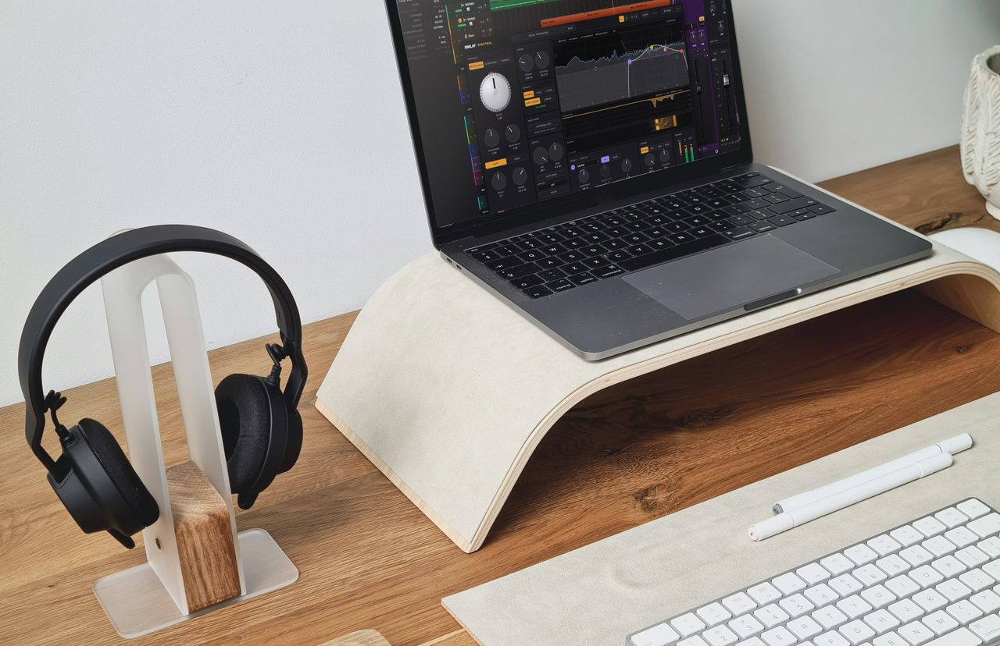
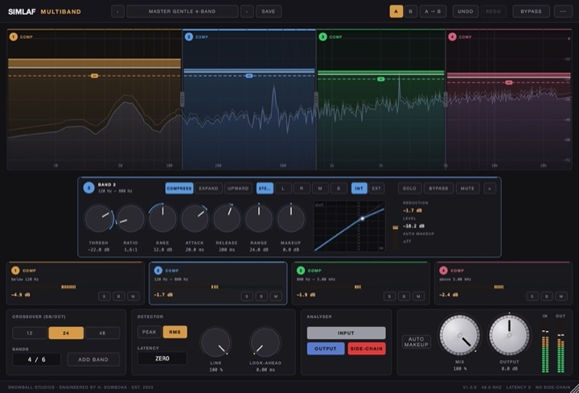

Flagship · Dynamics & EQ
SIMLAF Spectral
Harsh peaks tamed. Zero latency.
SIMLAF Spectral finds harsh resonances and turns them down as they happen, adding 0 samples of latency by default.
Store opens 27 November 2026.
- 0 samples
- 97 checks
- 1/48 oct
- 4 Parallel detection resolutions

Our own clip · SIMLAF Spectral
Same take. Spectral off, then on.
A bright synth lead with harsh upper-mid peaks, then the same take through Spectral's Vocal Harshness preset. Level-matched A/B.
Our own clip · SIMLAF Spectral
Hats come down. The log drum stays.
An Amapiano groove from NGOMA. Hats, shaker and claps drop about 4 to 6 dB between 3 and 8 kHz. Kick and log drum untouched.
Switch it yourself.
Press play, then tap Off and On as often as you like. The audio never stops, so you hear only what Spectral changes. Headphones help.
Your browser cannot run the player. Download the two files: Off · On.
Both sides: −18 LUFS.
Your browser cannot run the player. Download the two files: Off · On.
Both sides: −19.6 LUFS.
Each pair is the same take with Spectral off and on, matched in loudness so the louder side never wins, and the switch keeps the playback position. Your browser downloads the audio on your first tap.
You decide where it works.
Draw an 8-node sensitivity curve to aim it, then press Delta to hear only what Spectral is taking away.

What is SIMLAF Spectral?
SIMLAF Spectral is a resonance suppressor and spectral dynamics plug-in for macOS, in AU and VST3, plus a standalone app. Spectral finds harsh resonances and tames them as they happen. It also compresses, expands and ducks across the spectrum. Minimum-phase processing keeps it at zero latency by default, with linear phase there when you want it.
Four detectors at once
Four parallel detection resolutions on a 1/48-octave grid.
Tell it where to work
An 8-node sensitivity curve sets where it works hardest and where it leaves the signal alone.
More than suppression
Spectral compression, expansion and side-chain ducking, with an external key input.
Hear what is removed
Delta plays only the part of the signal Spectral is taking away.
Every stereo mode
Stereo, mid/side, mid-only and side-only.
Spectral, in four numbers.
Minimum phase keeps it at 0 samples. Switch to linear phase when you want it. AU, VST3 and standalone, on macOS 10.13 or later.
Store opens 27 November 2026.
SIMLAF Spectral · The Whole Studio
$79 alone, or $199 with 34 more.
Spectral alone is $79. Pick it with 2 other flagships for $179, or get all 35 audio products for $199 until 31 January 2027.
The Whole Studio
$199
All 35 audio products at launch, worth $1,715, plus SIMLAF 2 when it ships in December 2026, KAMILI and KARAKANA when each is released.
Buy The Whole Studio$199 until 31 January 2027, then $399: a fixed date, announced now. Or all 23 SIMLAF FX effects in the SIMLAF FX Suite for $99.
Free, with no time limit
Not ready to buy? Spectral Free is coming.
The Resonance mode of Spectral, at zero latency, free with no time limit. Planned for 3 November 2026.
More about SIMLAF Spectral FreeAutomatic sign-up is opening soon. You can request these updates by emailing us now.
Email for updatesAn email the day it is out, plus SIMLAF news now and then. Unsubscribe any time. See our privacy notice.
Tech specs
Formats & system
- TypeResonance suppressor and spectral dynamics plug-in
- FormatsAU · VST3 · Standalone · no AAX
- NeedsA host that loads AU or VST3 plug-ins, or none: it also runs as an app
- macOS10.13 or later; built for Intel and Apple Silicon (Apple Silicon testing in progress)
- WindowsComing December 2026
- Latency0 samples by default · linear phase optional
- ActivationOnline once, then offline
Price & licence
- Price$79 · one-time, free updates within the major version
- Free trial14 days, the full product. It never turns into a purchase by itself.
- RefundsWithin 14 days if it does not work on your system
- LicencePer user · up to 3 of your computers
- Also inThe Whole Studio, all 35 for $199
- FlagshipChoose it in the Producer Pack
- HelpSupport · hello@simlaf.com
Keep exploring
All of Dynamics & EQ
SIMLAF EQ
A 20-band dynamic EQ with analogue-matched filters.
- ±0.05 dB
- 100:1 Maximum per-band ratio

SIMLAF Compressor
Seven compressor characters in one, at zero latency.
- 7 Characters

SIMLAF Multiband
Up to six bands of compression, expansion or upward compression.
- 0.1 dB
- 6 Bands
SIMLAFLimiter
- 0 overs
SIMLAF Limiter
True-peak limiting with standards-based loudness metering.
- 0 overs
- 0.1 LU
New releases
The catalogue grows every month.
The SIMLAF catalogue grows every month. Subscribe and hear every release first.
Automatic sign-up is opening soon. You can request these updates by emailing us now.
Email for updatesNew releases and SIMLAF news. Unsubscribe any time. See our privacy notice.